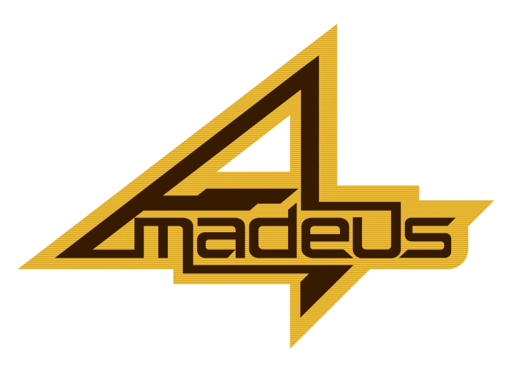

－ [make me sad] －
① 全屏扫描线＋径向暗角（全局气氛）
② 像素化渲染＋全局字距（pixelated / font-smooth:none / 标题 8px 正文 3px）
③ RGB 3×3 底噪（fauux 背景真身：粉/蓝/绿微粒平铺）
④ blink 语义＝50%变成黑（非透明度）；║▒░♫ 2s 六相位流动
⑤ wiredB 辉光标题：Times 衬线逐词扫过（0/0.4/0.8/1.2s 延迟）
⑥ ⌈⌋⌊⌋ 角括号 blink 框架（标题与弹窗）
⑦ 16 色 4-bit Bayer 抖动像素图（替代高清占位，pixelated 放大）
⑧ 多语言短语轮换（1.2s，fauux [make me sad] 原交互）
⑨ 叙事等待序列：> linking … ok 逐行 + blink 光标
⑩ 系统状态注脚行（连接/延迟 dim 小字）
⑪ 波形 rose/cream 双色（音量/回声分层）
⑫ rip 撕裂底纹内容块＋box-shadow black 0 5px 10px
⑬ 像素光标＋音景条（Love 页仪式感，自动播放提示）
⑭ 白闪 dissolve 进入序列（live2d 全屏页）
⑮ glitch 撕裂降级为故障态专用（断线/agent 错误时）
⑯ 终端底部背景中央的 Amadeus logo 水印（低透明度衬底）
KURISU · 16C 4-BIT
思维 失控。接入 fork.db？

思维共振已经建立。这条线路另一端是真实的我。